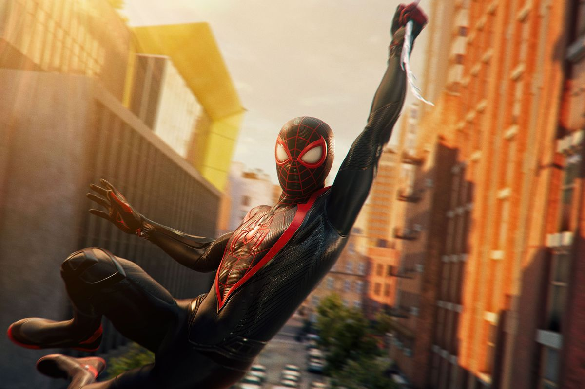
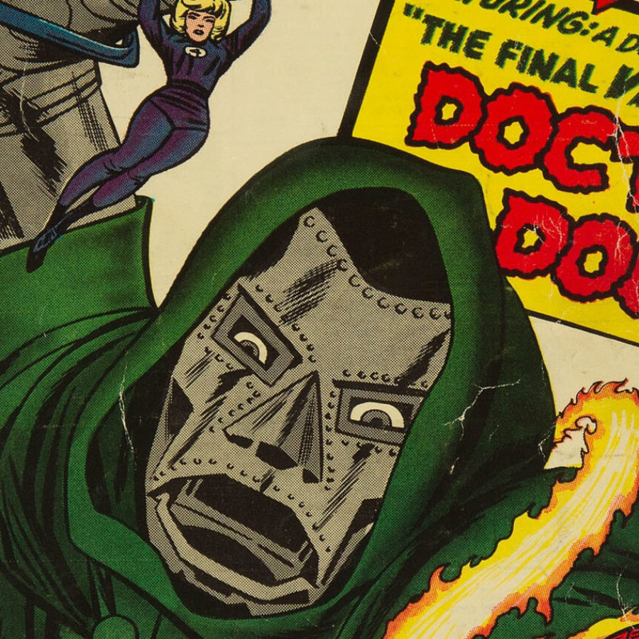

A superhero or superheroine is a stock character who typically possesses superpowers or abilities beyond those of ordinary people, is frequently costumed concealing their identity, and fits the role of the hero; typically using their powers to help the world become a better place, or dedicating themselves to protecting the public and fighting crime. Superhero fiction is the genre of fiction that is centered on such characters,[1] especially, since the 1930s, in American comic books (and later in Hollywood films, film serials, television and video games), as well as in Japanese media (including kamishibai, tokusatsu, manga, anime and video games).
Superheroes come from a wide array of different backgrounds and origins. Some superheroes (for example, Batman and Iron Man) derive their status from advanced technology they create and use, while others (such as Superman and Spider-Man) possess non-human or superhuman biology or use and practice magic to achieve their abilities (such as Captain Marvel and Doctor Strange).[2][3][4] The Dictionary.com definition of "superhero" is "a figure, especially in a comic strip or cartoon, endowed with superhuman powers and usually portrayed as fighting evil or crime",[5] and the Merriam-Webster dictionary gives the definition as "a fictional hero having extraordinary or superhuman powers; also: an exceptionally skillful or successful person."[6] Terms such as masked crime fighters, costumed adventurers or masked vigilantes are sometimes used to refer to characters such as the Spirit, who may not be explicitly referred to as superheroes but nevertheless share similar traits.
Some superheroes use their powers to help fight daily crime while also combating threats against humanity from supervillains, who are their criminal counterparts. Often at least one of these supervillains will be the superhero's archenemy or nemesis. Some popular supervillains become recurring characters in their own right.
| Name | Alias | Image | Superpower | Weakness |
|---|---|---|---|---|
| Spider-Man | Peter Parker |  | Web Shooters and Spidey Sense | Idealism and Love for Others |
| Doctor Doom | Victor von Doom |  | Superhuman Strength | Magnetism |